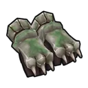

Manoplas do Jaguar de Pedra
Manoplas · Tier 15 · Nível 46
Se seu juramento não permite que use armaduras de metal, essa é a sua alternativa pesada.
Atributos
Defesa
650
Crítico
5%
Economia
Valor
20.000.000
Tempo de fabricação
4d
XP do comerciante
380.000
Trabalhadores: Ferreiro 38, Mestre 34, Joalheiro 31
Receita


Marcos do projeto
4
Tempo de fabricação -20%
10
-44 Aço
18
Valor +25%
25
-123 Ferro
40
Chance de qualidade +1